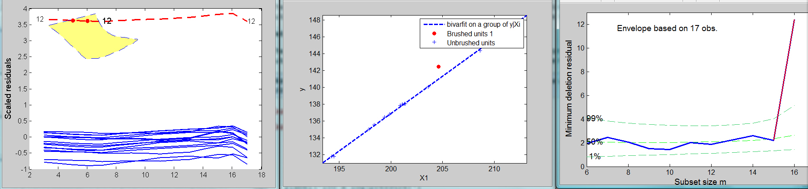
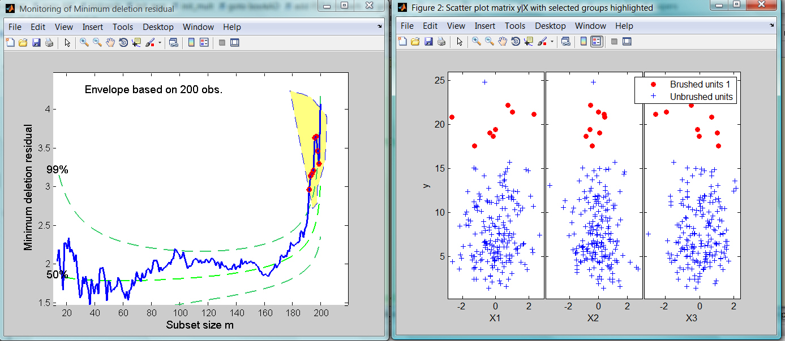

| Flexible Statistics Data Analysis Toolbox™ |
|
| Provide feedback on FSDA toolbox |
Interactive brushing option, common to fanplot, mdrplot, resfwdplot, levfwdplot , mmdplot, malfwdplot.
xxxplot(out,...,'databrush','',...)
xxxplot(out,...,'databrush',1,...)
xxxplot(out,...,'databrush',databrushstruct,...)
Remark: databrush is not a function which can be called directly. It is only an option inside functions fanplot, mdrplot, resfwdplot, levfwdplot . Given that option databrush is very elaborate we preferred to document it in a common separate page.
Option databrush can be an empty value, a scalar or a structure.
If databrush is an empty value (default), no brushing is done.
If databrush is scalar (for example databrush=1) brushing can be done only once and all the default options of function selectdataFS are used.
If databrush is a strucutre, it contains the values of all the fields described in function selectdataFS, and those described in the following table (see also the examples at the end of this page).
| Parameter | Value |
|---|---|
| 'persist' |
An empty value or a character. If persist is an empty value or
a character different from 'on' and 'off' brushing can be done only once.
|
| 'bivarfit' |
This option adds one or more least
square lines, based on SIMPLE REGRESSION of y on Xi to the plots of y|Xi.
|
| 'multivarfit' |
This option adds one
or more least square lines, based on MULTIVARIATE REGRESSION of y on X,
to the plots of y|Xi. |
| 'labeladd' |
If this option is '1', the text label of the units in the yXplot is added. The default is labeladd='' |
Details if you start brushing from the resfwdplot or levfwdplot
The points corresponding to the trajectories selected in the resfwdplot are automatically highlighted in the yX plot, i.e. a matrix of scatter plots of y against each column of X, grouped according to the selection(s) done by brushing. If the plot yX does not exist it is automatically created. In addition, brushed units are automatically highlighted in the minimum deletion residual plot if it is already open.
Details if you start brushing from the mdrplot
The points corresponding to the steps of the search selected in the mdrplot are automatically highlighted in the yX plot. If the plot yX does not exist it is automatically created. In addition, brushed units are automatically highlighted in the resfwdplot if it is already open.
Details if you start brushing from the fanplot
The points corresponding to the steps of the search selected in the fanplot are automatically highlighted in the yX plot. If the plot yX does not exist it is automatically created. In addition, brushed units are automatically highlighted in the resfwdplot if it is already open.
|
Note: the window style of the other figures is set equal to that which contains the units which are brushed. In other words, if the monitoring residual plot is docked all the other figures will be docked too. |
In this example we use the Forbes data
load('forbes.txt');
y=forbes(:,2);
X=forbes(:,1);
plot(X,y,'o');
xlabel('Boiling point')
ylabel('100 x log(pressure)')
% running the search
[out]=LXS(y,X,'nsamp',0);
[out]=FSReda(y,X,out.bs);
% Plot minimum deletion residual
mdrplot(out,'xlimx',[6 17],'ylimy',[0 13]);
% Now, some interactive brushing starting from the monitoring residuals
% plot. Once a set of trajectories is highlighted in the monitoring residual plot,
% the corresponding units are highlighted in the other plots
databrush=struct;
databrush.bivarfit='i1';
databrush.selectionmode='Lasso'; % Lasso selection
databrush.persist='on'; % Enable repeated mouse selections
databrush.Label='on'; % Write labels of trajectories while selecting
databrush.RemoveLabels='off'; % Do not remove labels after selection
resfwdplot(out,'databrush',databrush);
Figure below shows the output we obtain if we select the trajectory of unit 12 in the monitoring residuals plot.

In this example we use a set of simulated data
state = 137; state1=4567;
rand('state', state);
randn('state', state1);
X=randn(200,3);
y=chi2rnd(8,200,1);
[outLXS]=LXS(y,X,'nsamp',1000);
[out]=FSReda(y,X,outLXS.bs);
mdrplot(out,'sign',1);
%Example where databrush is a structure
databrush=struct
databrush.selectionmode='Lasso'
mdrplot(out,'databrush',databrush)
Figure below shows the output we obtain if we select the last steps in the monitoring of minimum deletion residual plot.
In this example we use the well known stack loss data.
load('stack_loss.txt');
y=stack_loss(:,4);
X=stack_loss(:,1:3);
nameX={'x1=air flow', 'x2=cooling water inlet temperature' 'x3=10 × (acid concentration ?50)'};
namey={'y=Stack loss'};
databrush=struct;
databrush.selectionmode='Brush'; % Brush selection
databrush.persist='on'; % Enable repeated mouse selections
databrush.Label='on'; % Write labels of the units while selecting
databrush.RemoveLabels='on'; % Remove labels after selection
databrush.RemoveTool = 'on'; % Remove yellow tool after selection
databrush.RemoveFlagged = 'on'; % Remove filled red color for selected points after selection
[out]=LXS(y,X,'rew',1,'lms',0,'yxsave',1);
resindexplot(out,'databrush',databrush,'namey',namey,'nameX',nameX)
Figure below shows the output we obtain if we select units 1, 2, 3 and 21 in the index plot of residuals.

At this point the user can do other selections in the index plot of residuals or terminate the brushing.
| Provide feedback on FSDA toolbox |
|
|
covplot.html | dsxy2figxy.html |
|